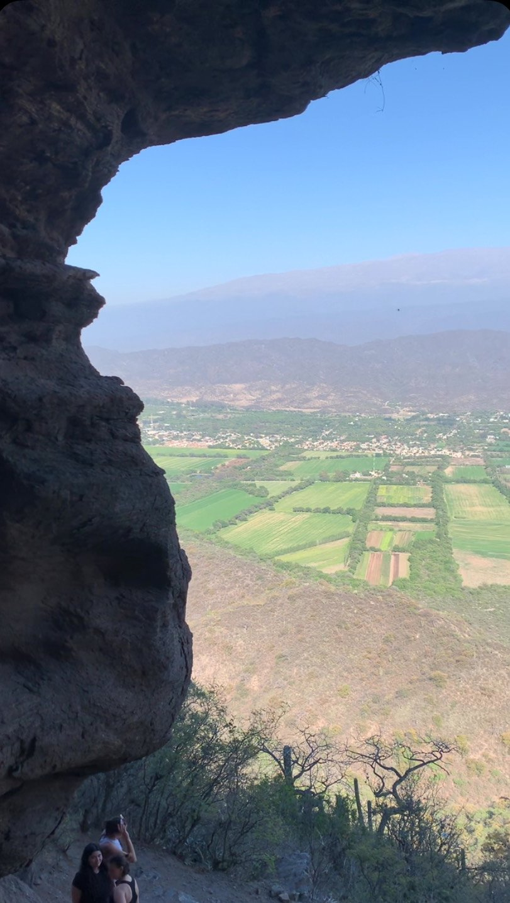
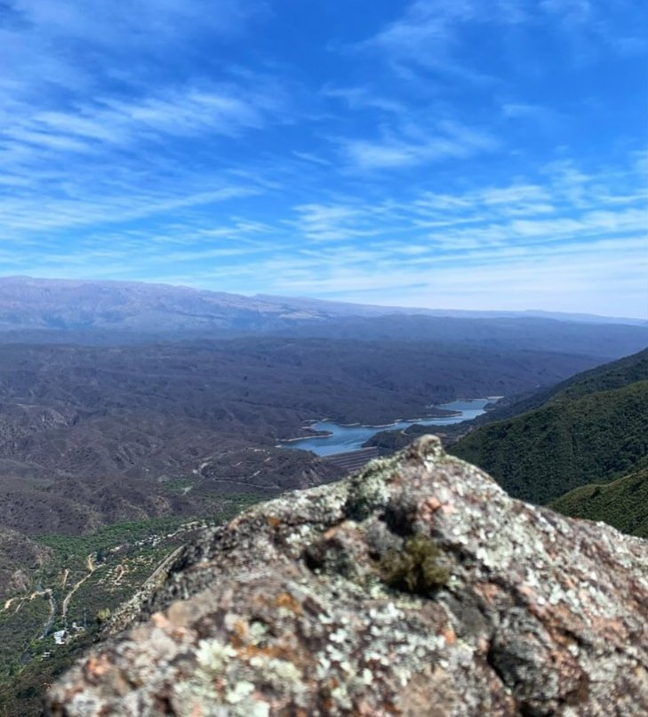
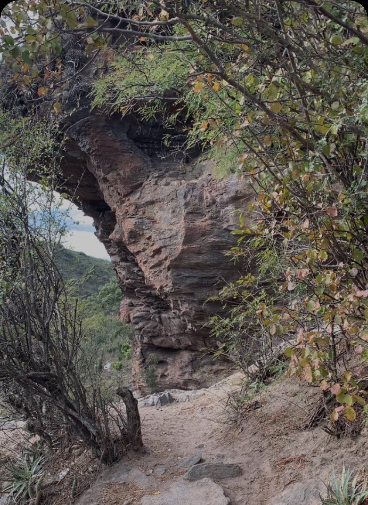
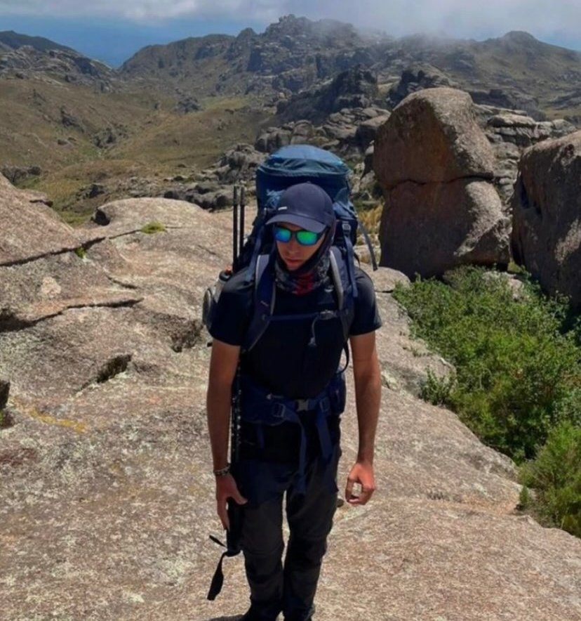
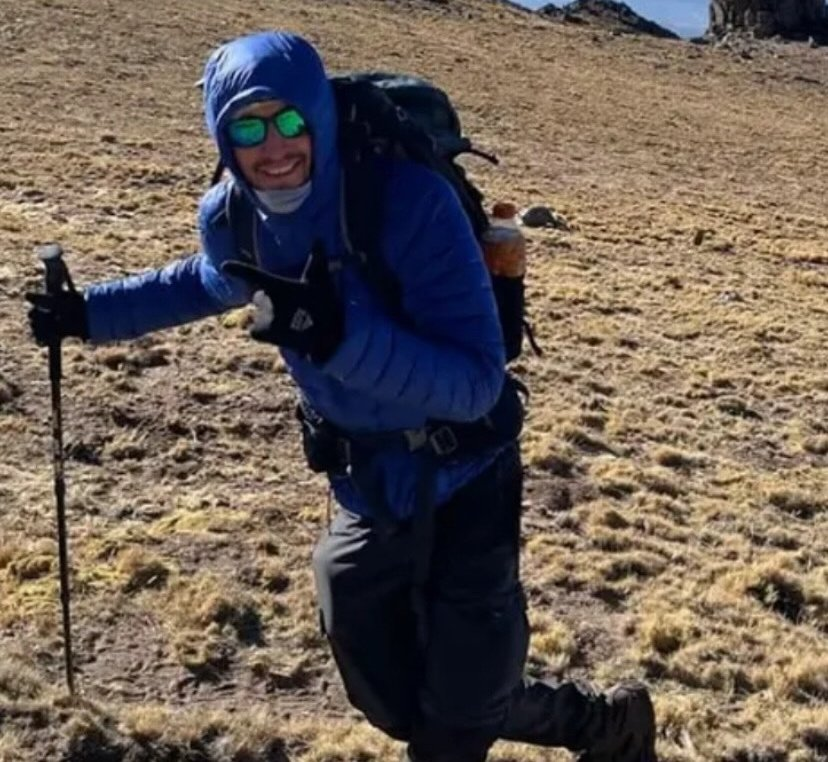

Casa de Piedra
En Fray Mamerto Esquiú. Una cueva de roca con una vista espectacular de todo el valle.
Trekking, ascensos y salidas personalizadas para que descubras los paisajes de la provincia caminando.
Quiero sumarmeCaminatas de medio día o jornada completa. Ideales para tu primera experiencia en la montaña.
Para los que quieren llegar a la cumbre y llevarse la mejor vista de la provincia.
Salidas a medida para tu grupo de amigos, familia o equipo, en la fecha que elijas.
Senderos cerca de la capital con vistas que no te imaginás. Consultá por las próximas fechas.

En Fray Mamerto Esquiú. Una cueva de roca con una vista espectacular de todo el valle.

Una subida exigente con una vista increíble del dique Las Pirquitas desde arriba.

Arcos de piedra, monte nativo y caminos entre las sierras para un finde al aire libre.


Nací en Catamarca y soy un apasionado de la vida al aire libre. Practico escalada en roca, slackline y MTB desde muy chico, y hoy me estoy formando como guía de trekking profesional.
Creé Entre Cumbres para acercar a las personas a la naturaleza a través de experiencias genuinas y compartidas.
“Entre Cumbres es estar en medio de la montaña, recorriendo y viviendo el lugar.”
Mandame un WhatsApp y contame qué salida te interesa.
Fecha, punto de encuentro, dificultad y qué llevar.
Vos traé las ganas, del resto me encargo yo.